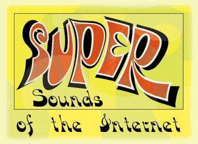

|

by Frank LaRosa
There's a certain charm about ancient vinyl recordings -- we used to just call them "records" -- that will never be
matched by the sanitary ones and zeros of a compact disc. But while the run-of-the-mill vinyl collector will chew your
ear off about the supposedly superior sonic qualities of the groove (no doubt while enjoying a classic Led Zeppelin
cut), there are a few of us out here who know the true value of vinyl. It's not the sound quality or the equipment that
makes vinyl our medium of choice -- it's the fact that the world's worst performances can be found almost exclusively
within the folds of a 12-inch cardboard jacket.
It's not that CDs are unfunny -- you can even get William Shatner's classic Transformed Man on a CD. But there's
a vast universe of lesser-known recordings out there that will never see the light of a laser beam. From rip-off
albums by unknown bands trying to cash in on the latest musical trend to lavish productions featuring well-known
celebrities performing
that year's "greatest hits," you could
probably fill a dump the size of Los Angeles with worthless vinyl (and we're not even counting disco). The '60s and
'70s seem to have been a time when record producers were particularly inclined to take the most incredibly bad
ideas for an album and bring them to fruition. Was the buying public really too naive to recognize the
difference between a real Beatles album and something by a group called The Brothers Four? Did we love actors like
Telly Savalas and Shatner enough that we had to have them on both our stereos and TVs? At a time when the phrase
"original artist" had yet to enter our vocabulary, the answer seems to have been "yes."
My fascination with aural oddities began eight years ago when I stumbled upon a bright green Jane Morgan
record called Fresh Flavor: A New Approach to the Big Hits at a thrift store in Port Jefferson, N.Y. Figuring I had
nothing to lose, I surrendered my 25 cents and headed home. Only moments after I laid the needle on the first track,
a cover of the Rascals' "Good Lovin'" featuring an incredible big-band arrangement, I was hooked. I had discovered
a whole genre of music that was not only vastly more entertaining than the album-oriented dreck my friends listened
to, but was also cheap and readily available at garage sales and thrift stores all over town. I'd discovered the Bad
Record.
Recently, I decided to enshrine some of the more endearing artists in my collection on the Web. Frank's Vinyl Museum is my humble way of giving a little back to the Internet community for the
countless hours of entertainment the 'net has provided me. Shortly after the site went up, I started receiving e-mail
from like-minded collectors telling me all about their off-the-wall collections. So I took a trip around the Web to see
what I could dig up, and to get a little insight into the motivations of my Bad-Record cohorts along the way. The
results were no less than fascinating.
Cocktail music pioneer Esquivel has enjoyed a rebirth in the last two years, but Enoch Light's experimental
sounds and over-the-top productions are just as endearing to those of us who are part of the "Space Age Bachelor
Pad" revival. Light is the centerpiece of Robbie Baldock's Spaced Out: The Enoch Light WWW Site, where I found everything I always wanted to know about this composer, including a detailed
biography and a complete discography in a handy table format. Baldock inherited his love for Light from his father,
who was apparently one of those "bachelors" who bought albums like Spaced Out in its heyday. After searching in
vain for Light resources on the Web, Baldock decided to create his own Light site. Even I was surprised to learn that
Light had been making records since 1957 and was responsible for producing such legends as Tony Mattola and
Dick Hyman.
The Odd Music Page contains mostly CDs, but curator Joe Batutis definitely has the ear (and the eye) of the Bad Record collector. I
found over 30 of the most unusual titles I'd ever encountered on Batutis' beautifully designed pages. If you want to
groove to the sounds of blaxploitation star Rudy Ray Moore, or just settle down with Sound Effects of Godzilla, this is
the site to visit. Batutis told me that his favorite disc is Quincy Jones Explores the Music of Henry Mancini. "I love the
CD for many reasons," says Batutis, "not the least of it is the whole concept of Rahsaan Roland Kirk doing Henry
Mancini (including great flute playing/scatting -- he does both at the same time!)." After viewing this site, I might just
change my mind about the cultural value of the compact disc.
The next site I found was Awful Music. Even though it only features one record (updated "every month or two, or whenever I get to it," says
the Webmaster), you'll be impressed. The site also contains intriguing links to oddities like The Mr. T Page and The
Dark Side of Pez.
California DJ Jack Diamond is a committed collector of weird vinyl, and he's been diligent enough to provide us
with a Web page showing over 50 of his prized platters at his site, Jack Diamond's House of Games. Jack seems to be more interested in the cover art than the
music itself, but in the world of wacky record collecting, the covers are often the best part. Make sure you click on
each link to see the crazy pictures. I hope Diamond will consider adding some thumbnail images in the future to
make navigation easier. He does divide his collection up into genres, which was helpful (I enjoyed the psychedelic
section the most). "Record collecting is no mere hobby,
no leisurely innocuous diversion," says Diamond. "It's a feverish passion bordering on dementia, driving those under
its influence to irrational, compulsive and sometimes fanatical extremes." Amen.
Surfing over to Germany, I found a couple of interesting records at Stereo de Luxe, including a photo of the Barbarella soundtrack album and something called Moog Groove that I actually
have in my own collection (it was given to me by a friend who purchased it in Paris).
The granddaddy of the exotic music movement seems to be Space Age Bachelor Pad Music. My favorite part of this site was something called "The American
Gallery of Exotic Album Covers," a page which delivers about two dozen mind-boggling examples. The scan of Si
Zenther's The Swingin' Eye!!! had me calling my colleagues away from their desks to gape with me -- what were
they taking in those days? With a wealth of Esquivel information and a long list of links to related sites, this is a
great place to start your record-collecting journey.
Irreverent New Jersey radio station WFMU is a cultural center of the recorded weird. FMU jock Irwin Chisud first
came to my attention as the author of the liner notes on Golden Throats, the breakthrough compilation album that's
responsible for the current surge of interest in William Shatner's aborted musical career (you haven't lived if you
haven't heard the Kirk version of "Mr. Tambourine Man"). WFMU has an extensive collection of tasteless musical resources for your exploration. Don't forget to
cast your vote for the worst pop music song of all time (I had a hard time choosing between Terry Jacks' "Seasons in
the Sun" and Bo Donaldson & the Heywoods' "Billy, Don't Be a Hero").
And if you really haven't heard the
aforementioned William Shatner recording, report directly to the James T. Kirk Sing-a-long Page where you'll get an eyeful (and an earful) from the man himself. Don't
forget to follow the links for more ridiculous recordings by Kirk's shipmates Spock (Leonard Nimoy), Scotty (James
Doohan) and Uhura (Nichelle Nichols).
For the die-hard among you who can never get enough, drop by the Exotica Mailing List page and add your name to the growing list of the obsessed. Then dust off your
turntable,
arm yourself with a thrift store list and
get hunting!
 
|